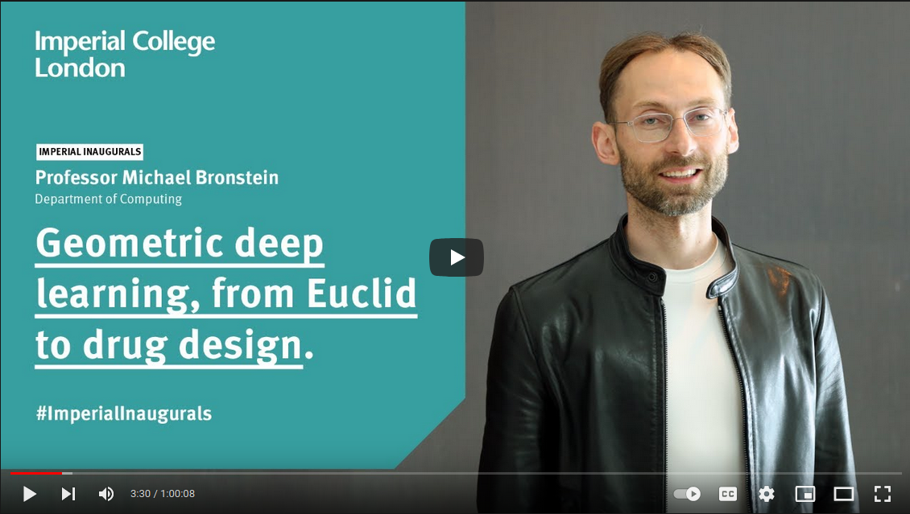
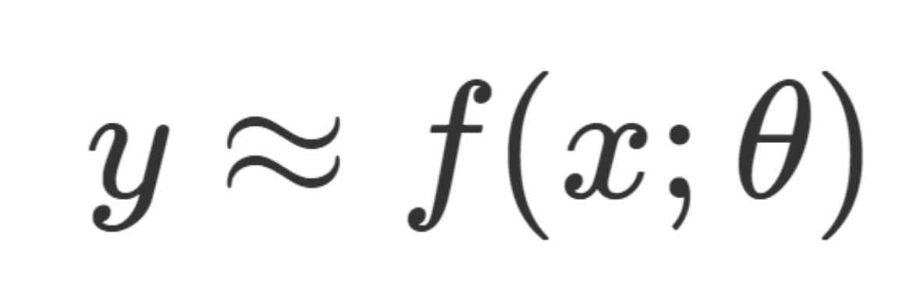
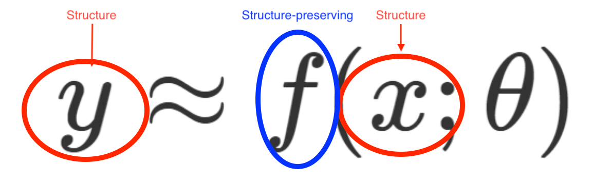

Input is transformed to output by matrix multiplication
Store this as a mental image for $$A \cdot \vec{x},$$ where $A$ is a matrix and $\vec{x}$ is a vector
Visualization taken from from 3Blue1Brown's essence of linear algebra
Store this as a mental image for $$A \cdot \vec{x},$$ where $A$ is a matrix and $\vec{x}$ is a vector
Visualization taken from from 3Blue1Brown's essence of linear algebra
Some core concepts from linear algebra
Linear dependence, linear independence, basis

Essence of linear algebra, 3Blue1Brown
Printio: the helpful robot
https://www.eleqtriq.com/wp-content/static/demos/2010/rotation/index.html
“Uncrumpling paper balls is what machine learning is about"
– François Chollet
“Uncrumpling paper balls is what machine learning is about"
– François Chollet
Video by Jovana Andrejević (source)


https://geometricdeeplearning.com/
https://geometricdeeplearning.com/

https://geometricdeeplearning.com/
